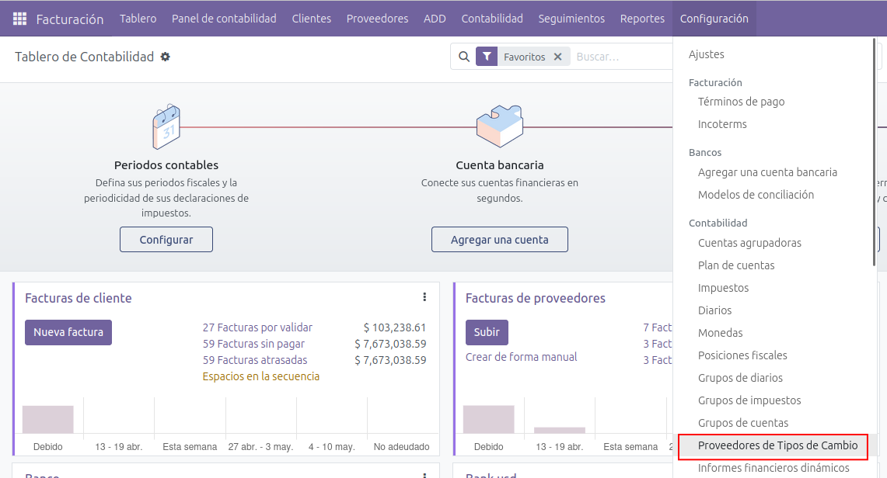
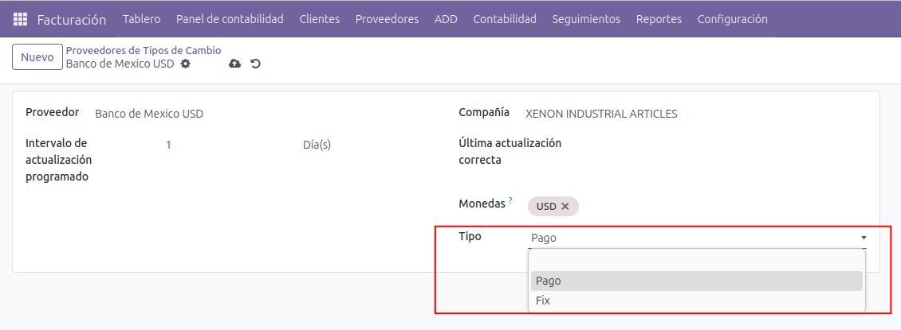
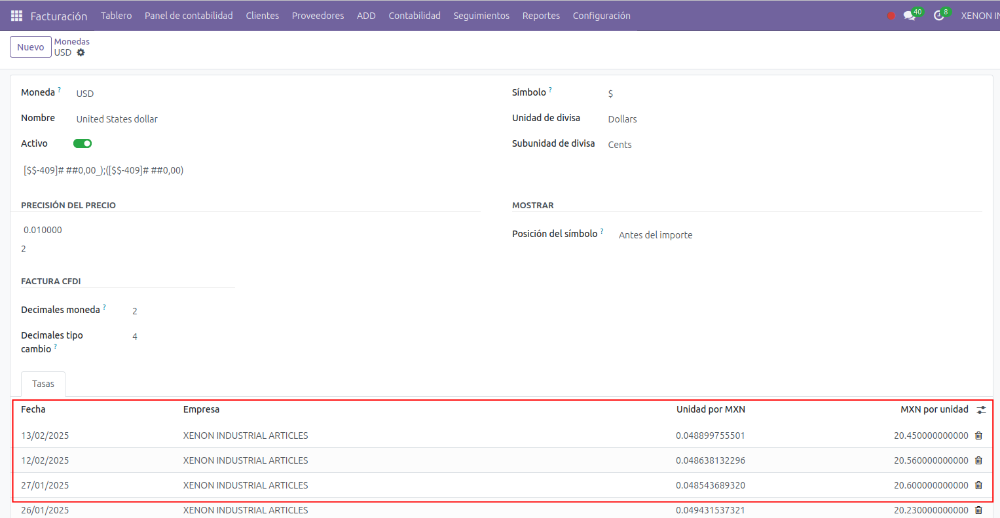

Tipo de cambio Banco de México
Se debe crear un proveedor de tipo de cambio.

Se puede seleccionar el tipo de cambio a descargar entre "Pago" o "Fix".

Se va a actualizar el tipo de cambio de manera automática al correr una rutina.
